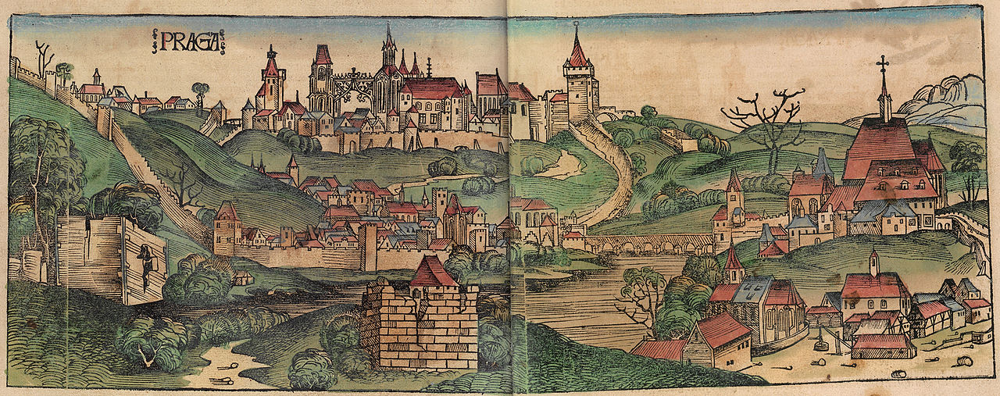
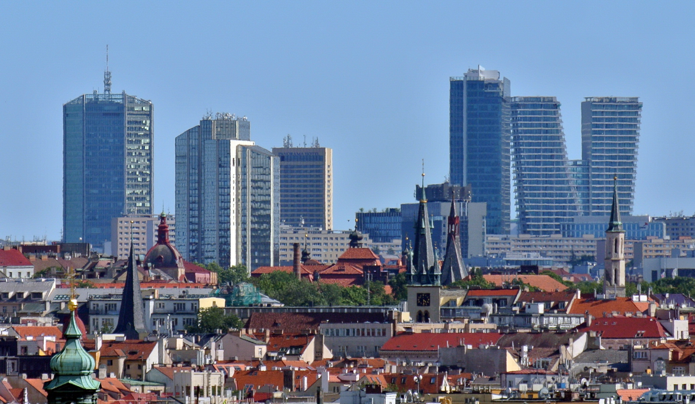
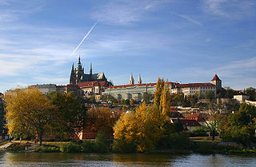
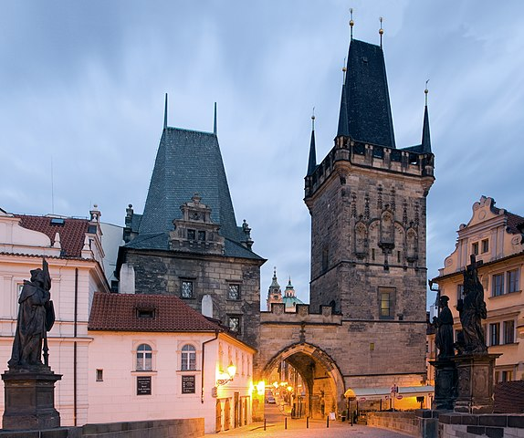

История
Первые исторические сведения о поселениях славян на территории современного города относятся к VI веку н. э. В X веке Прага стала столицей Чешского государства, в конце этого же столетия была выстроена рыночная площадь.
В первой половине XIII века вокруг каменных построек в районе площади стали возводить крепостные стены.
В XIX веке Пражская агломерация становилась наиболее важным промышленным центром всей империи. Особую роль играли предприятия машиностроения и металлообработки, используя недалеко расположенный угольный бассейн и металлургические предприятия города Кладно.
После распада осенью 1918 года Австро-Венгерской империи и образования независимой Чехословацкой Республики Прага стала её столицей.
В августе 2002 года Прага сильно пострадала от катастрофического разлива реки Влтавы, в результате которого была затоплена значительная часть города и на несколько месяцев выведен из строя метрополитен.
Население
На 31 декабря 2006 года численность жителей города составляла 1188,1 тыс. человек (преобладает женское население: на 48 мужчин приходится 52 женщины).
Государственным языком является чешский, им владеет практически всё население города, широкое распространение также имеют словацкий (его понимает абсолютное большинство чехов), немецкий, русский и английский. Здесь до сих пор можно услышать идиш.
Экономика
Из отраслей промышленности в Праге развиты машиностроение (станкостроение, транспортное, электротехническое и др.), химическая, текстильная, швейная, полиграфическая, пищевая.
Среднемесячная заработная плата в 2007 году составила 35 115 крон в предпринимательском секторе и 27 385 крон в непредпринимательском (в основном, бюджетном) секторе, что больше показателя 2006 года на 2 416 крон (7,4 %) и 385 крон (1,4 %) соответственно. Традиционно в городе оплата труда выше, чем в среднем по Чехии и её отдельным краям.
Так, в центральной Чехии средняя заработная плата в предпринимательском секторе за 2007 год составила 25 432 крон (72,4 % от пражского показателя) и 22 686 крон в непредпринимательском (82,8 %).
Архитектура
Пражский Град
В конце IX века первый христианский князь Борживой I из рода Пршемысловичей основал здесь княжеское городище, потом ставшее главным местом пребывания правителей этой династии. Резиденция епископа разместилась в Пражском Граде с 973 года.
В XII века возникли нынешние крепостные стены с башнями в результате общей перестройки Града Собеславом I.
В 1158 году Пражский Град превратился в центр Чешского государства. Наивысший расцвет Пражского Града относится к XIV веку, когда во времена правления Карла IV город стал резиденцией императора Священной Римской империи.
Чехия потеряла государственную независимость и императорский двор Габсбургов переехал в Вену. В 1753—1775 годах, в период правления Марии-Терезии, крупные строительные работы в Пражском Граде проводились вновь. Здания и дворцы приобрели черты рококо и неоклассицизма. На протяжении следующих полутора веков здесь находили приют отставные и престарелые самодержцы Австрийской империи. В 1918 году Пражский Град стал местом пребывания главы нового государства Чехословацкой Республики, а с 1 января 1993 года — резиденцией президента Чешской Республики.
Старый город
Старый город расположен на правом берегу Влтавы. Он вырос из мелких поселений, которые возникли на важном перекрёстке торговых путей между западом и востоком и вдоль берега Влтавы в X веке.
При короле Вацлаве I, который в 1232—1234 годах выстроил мощные крепостные стены, Старый город получил городские права. Чешские короли перенесли сюда свою резиденцию в XV веке. Еврейский квартал вырос в Старом городе в середине XIII века.
В ходе расчистки трущоб на переломе XIX—XX веков большинство стоявших здесь старых построек было снесено, а на их месте построены многоэтажные жилые дома.